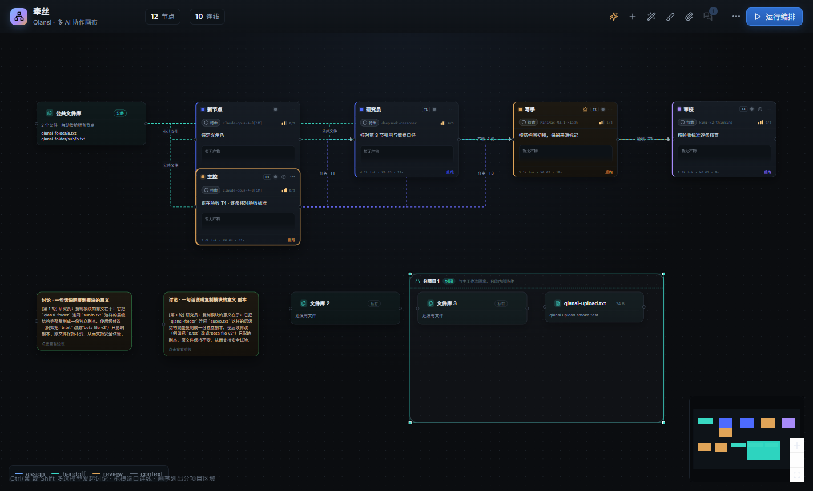
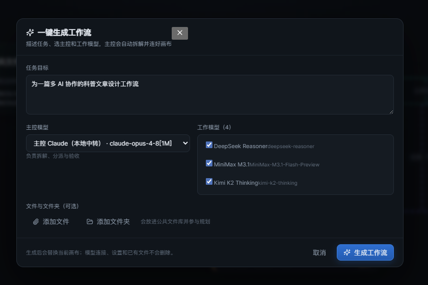
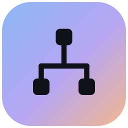

多模型讨论
让几个模型互相反驳，而不是各说各话。结论可以存成产物，留在画布上。
把模型放上画布，让主控拆解、分派、验收。
复制、粘贴、来回切换，上下文散在四个窗口里。每个模型都很强，合起来却不像一个团队。
指定一个主控，它按能力分派任务，盯着验收，把不合格的活打回修改。产物挂在连线上，随时能追到问题出在哪一步。

选主控、挑工作模型，附上文件或整个文件夹。主控生成分工与连线，画布自动排好。

让几个模型互相反驳，而不是各说各话。结论可以存成产物，留在画布上。
每个任务的产出直接出现在连线中间，点击就能看验收结论，不用翻日志。
文件可以单独上传，也可以整目录导入。用画笔圈出子项目，单向或双向接入主流程。
